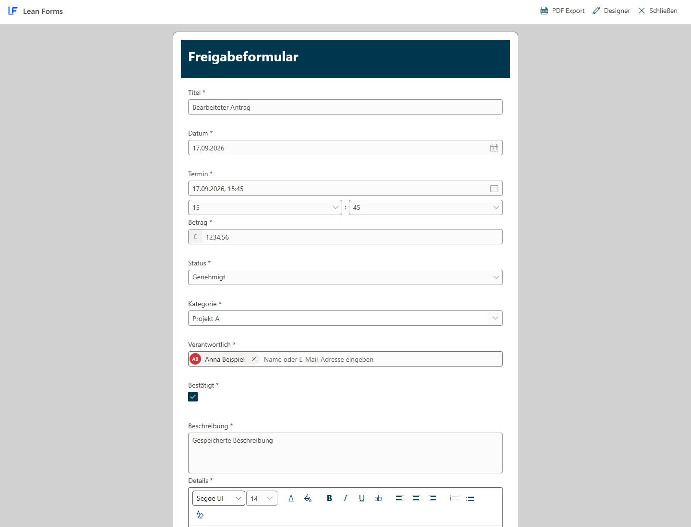

Capture information clearly
Structured layouts with up to four columns guide users through even detailed forms.
Form designer for modern SharePoint lists
Lean Forms turns the New, Edit and View forms of your SharePoint lists into clear workspaces—with visual design, dynamic rules, repeating sections and PDF export.

More structure. Fewer detours.
Standard forms rarely reflect the way every team works. Lean Forms arranges information around what your users actually need—directly in SharePoint.
Structured layouts with up to four columns guide users through even detailed forms.
Rules adapt fields and sections to entered values or the currently signed-in user.
Export the displayed form—including its layout and repeating rows—as an A4 PDF.
Powerful building blocks
From initial design to daily use, Lean Forms combines flexible layouts with features built for real business processes.
Arrange and resize fields, headings, rich text, images and custom sections in flexible one-to-four-column layouts.
Capture line items, participants or inspection points as rows that users can add, edit and remove within the form.
Nested AND/OR conditions control values, visibility, required states, colours and read-only behaviour.
Download the current form with its colours, content and repeating rows as an A4 PDF—without an external conversion service.
New, Edit and View forms share the same configured experience for a consistent interface throughout the item lifecycle.
Product controls follow the SharePoint display language. Your own field labels and content remain fully under your control.
See it in action
See how Lean Forms brings design, repeating data, rules and documentation together in one SharePoint solution.
Arrange, resize and configure fields and content in one clear workspace.
Repeating sections organise line items and other related entries into structured rows.
Rules represent sophisticated processes in a clear, declarative way.
The visible form is prepared as a multi-page A4 PDF directly in the browser.
Product screenshots show the German interface. Lean Forms follows the SharePoint display language and is also available in English.
Three straightforward steps
Lean Forms is delivered as an SPFx solution and connects your published design to the forms of the selected list.
Deploy the Lean Forms package through the SharePoint app catalog and install it on the required site.
Open Lean Forms from a list’s command bar, arrange fields and configure the features you need.
Publish the design and use it across the list’s New, Edit and View forms.
Want to explore the right fit? Tell us briefly about your list and desired workflow.
Get in touchBuilt for your SharePoint environment
Lean Forms enhances modern SharePoint lists without introducing a separate store for list items. Reads and writes run in the signed-in user’s context.
List items and form configuration are stored in SharePoint. Repeating data is held in a configured list field.
The PDF is created in the browser. Form values and the result are not uploaded to an external conversion service.
SharePoint reads and writes run under the currently signed-in user.
Versatile by design
Lean Forms fits wherever structured input, clear rules and documented results belong together.
Adapt required states, visibility and read-only behaviour to form values and the signed-in user with rules.
Edit related line items in repeating sections and save them together with the form.
Export form states, including structured rows, as an A4 PDF.
Frequently asked questions
Have another technical or process question? Write directly—no contact form and no detours.
Ask by emailLean Forms customises the New, Edit and View forms of modern generic SharePoint lists. Document libraries are not part of its intended scope.
Yes. Repeating sections let users add rows for items such as positions, people or inspection points. SharePoint’s technical limits still apply.
No. It captures the currently displayed values—including unsaved input—without updating the SharePoint item.
Opening the designer requires SharePoint’s Manage Lists permission on the target list. Publishing also checks the write permissions required for configuration storage.
The product interface is available in English and German and follows the SharePoint display language. Custom labels, choices and authored content are not translated automatically.
Tell us about your list or use case. We’ll explore how Lean Forms can give your process a clearer, more effective interface.